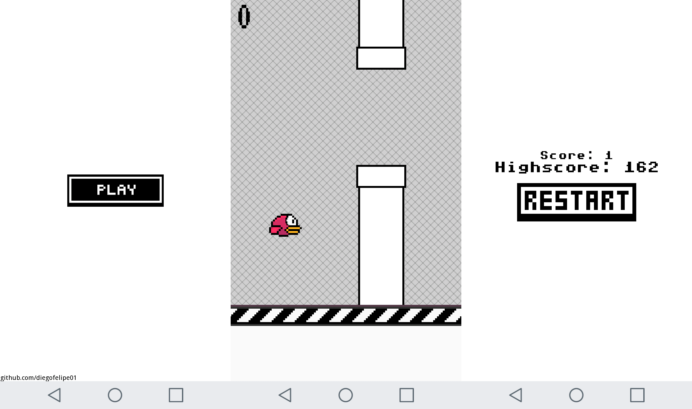
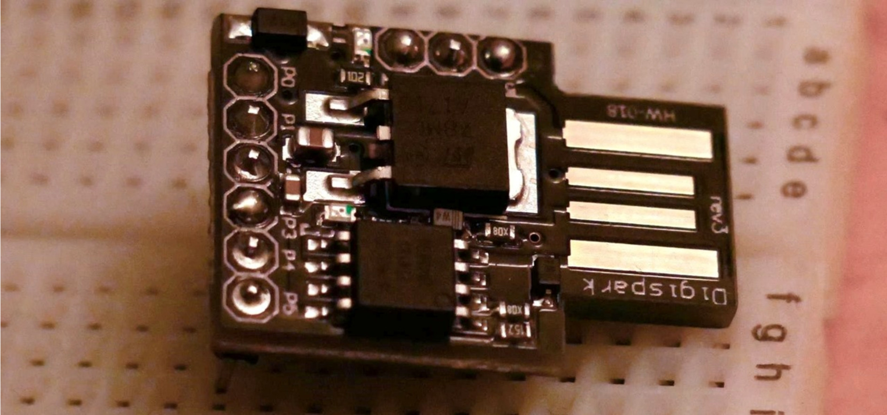

Diego F. Silva

Flappy Bird Clone (黒い鳥) 🐦
Projeto desenvolvido com o intuito de praticar programação OO e aprender como jogos são desenvolidos.
Desenvolvido usando o framework LibGDX.

DigiSpark (BadUSB Attack) 💻
Projeto desenvolvido no meu local de trabalho com o objetivo de provar a existência de uma falha de segurança muito comum.
O teste consistia de provar a capacidade de gerar uma shell reversa com privilégios de admin em computadores rodando o SO Windows.
Esse site! 🐱👤
Infelizmente a maioria dos meus projetos relacionados a programação são dedicados ao meu trabalho e durante meu tempo livre custumo estudar pentest e Linux.
Porém, todo esse site se encontra no GitHub, junto com alguns outros projetos públicos!